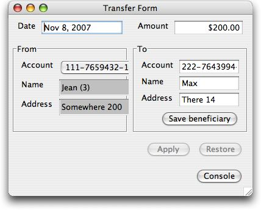
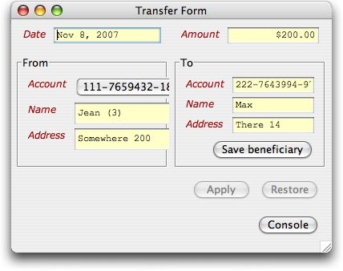

Like HTML, swiby has a style sheet concept. It works in a very similar way, but is a lot more powerful.
Consider the unstyled and styled versions of a 'transfer form' :

The only difference between the two is the presence of the following at the top of the swiby page:
require 'styles'
The stylesheet itself (styles.rb) would look like:
styles {
root(
:font_family => Styles::VERDANA,
:font_style => :normal,
:font_size => 10
)
label(
:font_style => :italic,
:font_size => 12,
:color => 0xAA0000
)
input(
:font_family => Styles::COURIER,
:font_style => :normal,
:font_size => 12,
:background_color => 0xFFFFC6
)
button(
:font_weight => :bold
)
}
The current implementation is quite simple. We are going to allow the matching by class. What is a plus is that this is a ruby script - you are going to be able to do leverage simple things like variables used multiple times, and custom functions if you want to (its Turing complete, not just a list of values).